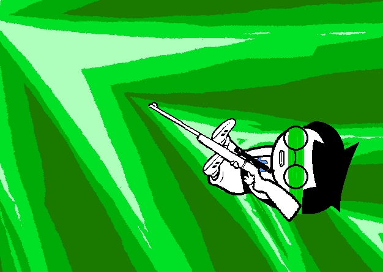
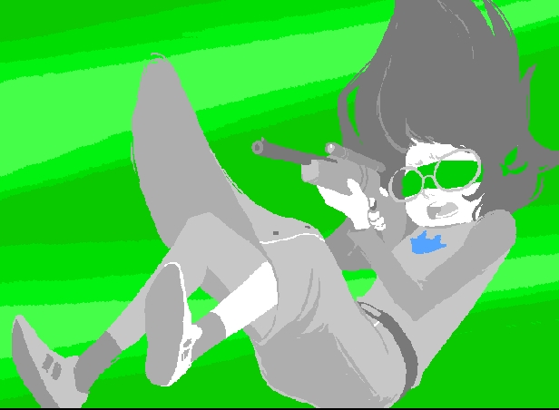

I recently interviewed Andrew Hussie, the creator of Problem Sleuth and Homestuck at MS Paint Adventures. In my continuing belief that digital humanities scholars can learn practical and theoretical lessons from avant garde digital artists, I’m posting that interview here.
MS Paint Adventures, often referred to as MSPA, is a collection by Hussie, who describes his work in general and each story to new readers here. The two fundamental components of the process are, in his words:
1) MSPA stories exist in the format of “mock games”, specifically text-based adventure games. You advance through the pages of the story by clicking links which sound like commands you would type in a text prompt to get a character to do something. Generally, the character will respond to that command on the following page.
2) MSPA stories are largely “reader-driven”, in the sense that most of the text commands were supplied by readers through a suggestion box. I would select a command from the list, and then illustrate the result of the command.
When I say “largely reader driven”, I mean this approach has undergone a lot of evolution from adventure to adventure, and continues to even now.
Hussie’s work, exemplified by his current project, Homestuck, is radically synthetic. The story is told using faux parsed commands, similar to old parser-based text and graphical adventure games, which were originally gathered from Hussie’s audience but now largely exist as a stylistic element with the commands explicitly by Hussie for the advancement of the story. These commands drag the story into surrealist territory with their absurd demands to find the character’s not-missing arms or to urinate at inappropriate times and locations. I was surprised to find out that rather than coping with absurd commands and developing a strange, tangential storyline, it was Hussie’s desire to subvert the most straightforward of requests to cause such storylines to emerge.
The subject matter is itself a stew of modern digital life–chat clients, programming, ironic comic websites, multiplayer gaming, inventory management systems and fractal imagery. Like Scott Pilgrim Versus the World, it is constant and un-self-conscious and considers these new terms, situations and expressions no more novel than the traditional written or visual elements found in older media. And while the nostalgic references to “old timey” games and the ageless characters resemble that of Homestar Runner, Hussie insists that his intention is only to tell a good story, and not to wrestle with questions of melancholy or irony.
Representation of the story is similarly variegated. The characters may at one moment be represented as an 8-bit character sprite, and at the next moment in “heroic mode” with traditional techniques. “Bro”, while standing on a flaming meteor, looks and moves in the manner of a Street Fighter II combatant. The story is told in single panels, animated gifs, Flash animation, chat logs and, at one point, as a console game resembling any of dozens of RPGs seen on the Sega Genesis or Nintendo. Hussie’s own description of the process is practical and focused on maintaining regular updates, critical for maintaining his small but fanatical audience.


Jade Harley from Homestuck represented as an 8-bit character sprite


The same character in the same pose during the same moment as above, except rendered in Heroic Mode
When I questioned what kind of digital literacy and familiarity the story required, Hussie replied “To understand the story, you don’t need much of a background in anything. To understand every detail, you need a fairly diverse range of knowledge.”
Do you feel like the form and substance of the various stories on the site vary significantly from earlier work, especially in a more static medium (graphic novels on the web and in print)?
Aside from my one graphic novel, which is itself an incomplete story, there aren’t even many stories in my earlier work. Primarily gag comics. Otherwise the content is pretty similar. Same sense of humor runs throughout.
You use a variety of technologies in the creation of content, could you walk us through the various manners in which an individual page might be produced?
The average page is a .gif file created in Photoshop, and often modified from an existing template of a room or such, but just as often, something drawn from scratch using a tablet. And quite frequently, animated in a simple way, using Photoshop’s animation tools. The Flash animations involve porting graphics made in Photoshop into Flash. This animation process is much more daunting.
You’ve mentioned elsewhere that you only used Microsoft Paint for one page, and immediately switched to Adobe Photoshop. What was your aesthetic motivation for using such a limited image editing package (and, later, emulating such a package)?
The motivation was negligible to nonexistent. It began as a simple game on a forum without the slightest bit of thought put into it, other than the name of the game, which I decided would be called MS Paint Adventures. Consequently it should involve working with MS Paint. But since it’s unpleasant to use, I discarded that idea immediately, but continued the game. Clearly I didn’t think it was important to the process then, nor do I now.
Could you explain the style of storytelling wherein the author acts as a parser for community-decided commands? Has it been done before? What’s the appeal of this style? How and why did you start creating in this style?
I don’t know if it was done before I did it, at least not with the author illustrating the result. Many have emulated similar game action through text alone though. The appeal is in the absurd dialogue that develops between author/reader.
In Problem Sleuth, community involvement in decision-making seems to have lead you to develop an incredibly convoluted story, including time-traveling, the afterlife, a monster-infested alternate reality, a fantasy-adventure themed world of animal kingdoms, Lovecraftian horror and other strangeness. This all occurred in what was ostensibly framed as a hard-boiled detective story. Can you give some insight into how the community helped shape the story and what the experience was like for you to interpret their “commands”? Did you originally want to tell a hard-boiled detective story and allowed it to go astray, or did you expect it to go astray? Did the straying enhance your sense of story or did you feel confined by the absurdity?
There weren’t many expectations to even go astray from. Some of the absurdity was reader supplied, but even more absurdity was supplied by my reaction, resisting their will. It’s why he stayed stuck in an office for so long, to resist the reader’s strong will to escape. The absurdity comes not from absurd commands issued by the reader, which by themselves are uninteresting. It’s in the tension between what they want and what I supply.
And in reducing the reader’s role in guiding the story, it’s clear this absurdity can remain present even without it.
Your latest story, Homestuck, has moved away from the practice of letting the audience decide the actions of the characters. How has that affected your storytelling?
It’s made it easier, and more interesting. Reader commands are fun for a while, but boring over the long haul, and detrimental to bringing a story to a conclusion.
You’ve commented elsewhere that you’re including more linear narrative (in the form of chat logs and memos) to advance the story. What is your experience with integrating and balancing various types of media in your storytelling? How do you find the difficulty of production (for instance, the ease of producing a single static image or writing a chat log versus building a dynamic or interactive flash object with sound) affecting your storytelling decisions?
Flash stuff is the hardest, so I do it infrequently, and usually for major events.
Everything other than that is about on the same level. Writing a conversation is not much more time consuming than crafting a simple panel or two. I keep it all on the same effort level by design. I could expend more effort on any one thing, but don’t.
Would you consider your work post-ironic? There are earnest and jaded characters in Homestuck, is there an implicit critique of either view or some kind of middle ground that you’re trying to establish? Both types of characters (and here I’m thinking of John and Dave) engage with the ironic and earnest consumption of the same media. At times the work seems incredibly serious and idealistic, with heroic and dramatic that seems at odds with less serious moments. How do you reconcile this? How does it compare with stories that more traditional audiences may be familiar with?
There is no critique on those issues intended whatsoever. The mix of silly and serious is an aspect of the type of story I want to tell. It’s possible to do this in perfectly traditional formats, so I don’t know if the reactions of a traditional audience are relevant. It’s just not a blend that often arises in any sort of work, to my knowledge.
If you’re interested in more details about Homestuck, Andrew Hussie maintains a very active forum wherein he engages with the various details of the story and the process.